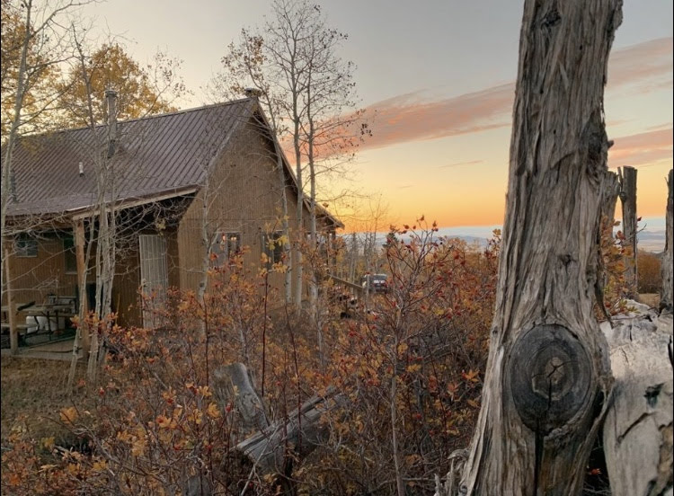

Maren has always loved traveling. Ever since she was young living in China, she traveled every year. She was so used to flying on planes that when she got old enough to travel by herself, it wasn't too scary. Roadtrips, scenic hikes, and overseas trips -- SIGN HER UP!
Stateside Travel
Maren has been to 27/50 of the states in the USA, one of her goals in her life is to travel to all 50. Those 27 include: Alabama, Arizona, Arkansas (probably the best state), California, Colorado, Florida, Georgia, Idaho, Illinois, Indiana, Kansas, Louisiana, Maryland, Michigan, Mississippi, Missouri, Nebraska, Nevada, New Mexico, New York, North Carolina, Oklahoma, South Carolina, Tennessee, Texas, Utah, and Wyoming. In addition to those, she has also been to Washington, D.C.
Ever since moving to Arkansas, Maren's family has gone on roadtrips to Utah to visit family and go up to their family cabin up in the mountains. Riding in a car for hours isn't the worst thing for Maren, in fact, it can be quite enjoyable with the right company, a good playlist on, and sites to see.
 The family cabin her family would visit yearly. In the mountains up Shurtz Canyon near Cedar City, UT.International Travel
Maren has been to 17 different countries and is planning on traveling to many more in her lifetime. These 17 countries include: Mainland China, Hong Kong, Macao, Indonesia, Malaysia, Taiwan, Thailand, Austria, Czechia, Polan, Slovakia, Cayman Islands, Belize, Honduras, United States, Australia, and New Zealand.
One of her international goals is to travel to ever single continent in her lifetime; and she is well on her way to achieving that.
 In 2006 when Maren went to New Zealand with her family. She was 5 years old.
In 2006 when Maren went to New Zealand with her family. She was 5 years old.
Among Maren's goals for 2023, getting scuba certified is 100% in there. Who will do it with her?
Traveling bring so much joy and cultural connectivity between nations and people, something that brings true happiness to Maren everyday. Maren doesn't expect to stop traveling anytime soon, the real question is who will be traveling with her? Who is up for the task?